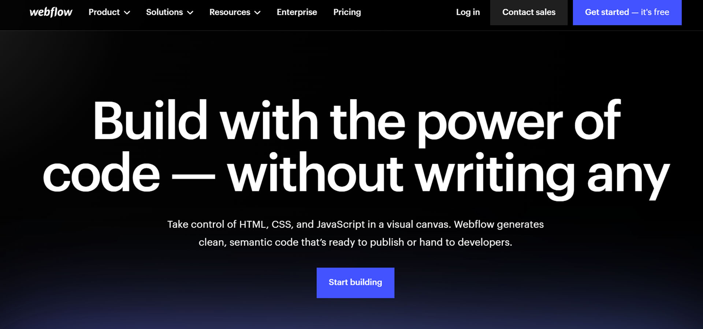
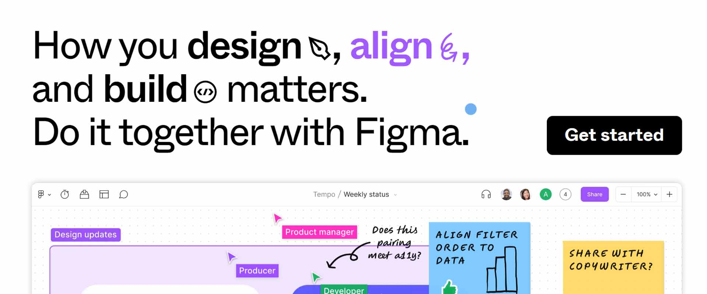
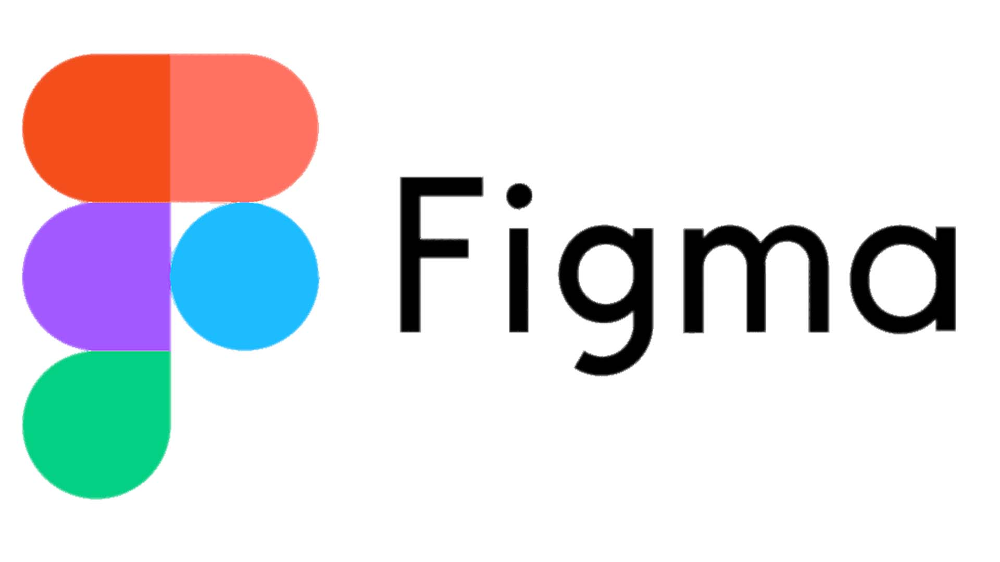

In today's rapidly shifting tides of creative design and development programs, selecting the right tools can significantly impact your creative journey. Webflow and Figma, two prominent players in the field, offer distinct advantages and functionalities.

While Webflow and Figma cater to different aspects of the design process, their symbiotic potential can empower designers to achieve remarkable outcomes.
In this comparison, we'll explore the unique features of Webflow and Figma, how they seamlessly fit into the design workflow, and whether leveraging both tools can be a game-changing strategy.
What is Webflow?
Webflow stands as a versatile web design and development platform that grants designers the ability to craft visually stunning and interactive websites without coding complexities.
Webflow seamlessly merges the worlds of design and development. Designers are given a canvas where they can create pixel-perfect layouts, which can then be brought to life through custom animations and interactive elements.
One of the standout capabilities of Webflow is its capacity to generate clean, production-ready HTML, CSS, and JavaScript based on a modular, visual designer. Below, you can see Webflow developers' secret weapon: The Designer.
It's composed of real time visualizations of HTML & CSS properties. But, not an ounce of coding knowledge is needed to launch a Webflow website.
Webflow "bridges the gap between design and development,” facilitating a fluid transition of your artistic visions into functional websites.
An estimated 3.5 million designers have Webflow as their go-to website creator, with Webflow hosting software amassing a staggering 4.1 billion page visits each month (My Codeless Website).

Never in the history of programming has it been this easy to create a website from scratch, and have it work on all devices.
What is Figma?
Figma takes the spotlight as a cloud-based design tool renowned for its emphasis on collaborative efforts and efficient prototyping. At its core, Figma serves as a platform where teams can collectively engage in design projects, with real-time collaboration at the forefront.
Figma's true strength emerges in creating interactive prototypes. These prototypes illuminate user flows and interactions, enabling designers to rigorously test concepts prior to entering the development phase.
Its collaborative prowess and prototyping use cases are deemed by 4+ million people as an invaluable asset. Remote solo agencies like mine get the same value out of it as do billion dollar corporations like Coinbase, Twitter, Netflix, AirBNB, Dropbox, the list goes on.
How do Figma and Webflow fit into the design process?
Figma excels in the earlier stages of design, serving as a hub for ideation, wireframing, and collaborative design endeavors. Its real-time capabilities make it an ideal choice for teams who seek to collectively shape initial concepts and user interface designs.
Webflow predominantly caters for the design-to-development transition. It provides a platform where designers can craft layouts that work on all devices, interactive elements, and intricate interactions directly within the tool. It’s for designers who yearn for comprehensive control over what goes into the final website.
Can I use Webflow and Figma together?
The interplay between Webflow and Figma, when harnessed effectively, can significantly elevate a designer's toolkit. The Figma to Webflow plugin allows users to copy and paste their designs from Figma right into the Webflow Designer.
Digital pioneers might initiate projects in Figma to conceptualize & iterate on wireframes and then project their design directly into Webflow.
This plugin integration provides a smooth workflow that caters to both the visual aspect of Figma design and the technical execution within Webflow. The opportunities that arise from combining the powers of the two are endless.
This symbiotic approach garners an evolution from the creative exploration phase to the development of polished, fully functional websites. It eliminates the need for manual conversion of designs, saving time and ensuring design fidelity.
In Conclusion
In a realm where creative innovation is imperative, both Webflow and Figma play pivotal roles. Webflow's prowess lies in transforming design visions into tangible web experiences, while Figma shines in fostering collaboration and streamlining the prototyping process. Whether utilized independently or synergistically, these tools provide designers with a dynamic arsenal, enabling them to craft captivating digital experiences that resonate profoundly with users.
That's about it for now
Thanks for reading my tools that everyone already knew about. But if you didn't, or forgot, every little bit helps!